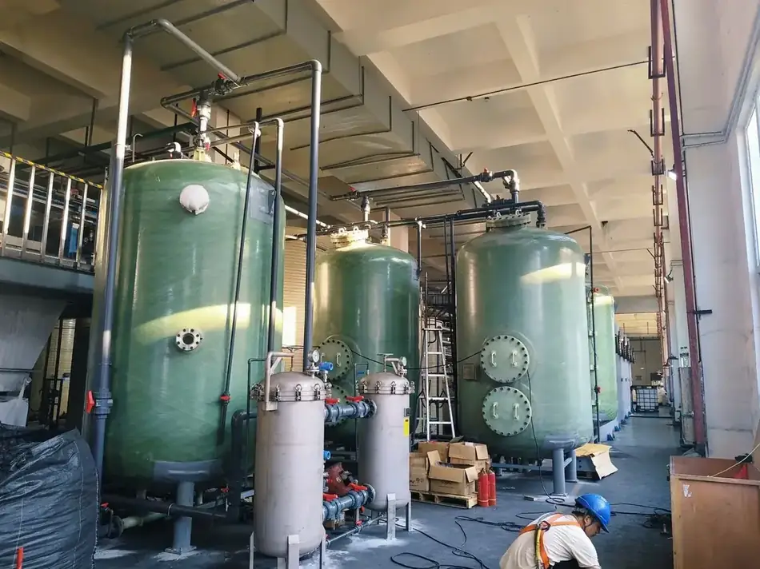
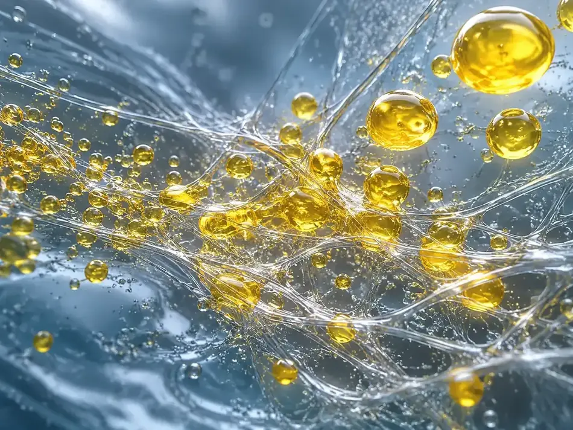

In hydrometallurgical extraction, the oil in a liquor is partly dissolved and partly not. Dissolved oil needs deep treatment; non-dissolved oil can be recovered physically — and it is the non-dissolved fraction that drives the consumption of activated carbon and resin downstream. Removing it first turns a consumable cost into recovered organic phase.
Where it is used
- Oil removal from extraction liquor in nickel-cobalt and copper-cobalt hydrometallurgy
- Recovery of organic phase before deep treatment
- Pre-treatment ahead of activated carbon or resin
- Retrofit of existing clarifier troughs where floor space is limited
| Item | Value |
|---|---|
| Principle | Surface-modified oleophilic, hydrophobic metal fiber coalescence — purely physical, no demulsifier, no chemical sludge |
| Configurations | Tank type up to 30 m³/h, skid-mountable; trough type for large flow; retrofit of an existing clarifier trough |
| Largest unit in service | 600 m³/h |
| Typical oil removal rate | Around 70%, stable over three years at a 15 m³/h installation |
| Typical outlet oil content | 5–30 mg/L, depending on conditions |
| Footprint | Roughly one third to two thirds of the hourly throughput figure |
| Coalescing element life | Long service; longest installation in use five years without replacement |
| Payback | Typically one to two years in nickel-cobalt applications |
| Recognition | Provincial first-of-its-kind major technical equipment recognition |
| Criterion | Settling | Flotation | Barrier coalescence | QL oil recovery |
|---|---|---|---|---|
| Removal of non-dissolved oil | Poor | Moderate | Good | Best |
| Footprint | Large | Medium | Medium, often multi-stage | Small, about ⅓–⅔ of hourly throughput |
| Running cost | Low | Higher | Higher, element replaced about yearly | Low, coalescing element not routinely replaced |
| Core material life | n/a | n/a | About one year, performance decays | Long, up to five years in service |
Dissolved oil content in extraction liquor is generally 5–40 ppm depending on the extractant and mixing regime, and still requires deep treatment. Recovering the non-dissolved fraction first is what reduces that downstream load.
Product and application




Send us your operating conditions, and we will send samples.
Temperature, medium, pressure, filtration rating, resistance or porosity — give us the numbers you work with and our engineers will recommend a configuration, quote it and arrange samples for your own testing.